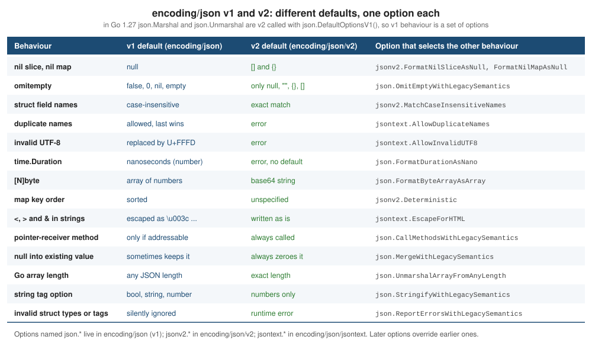

encoding/json
|
This content was generated with the assistance of AI and should be verified against the official documentation before being relied on in production. |
This page is written against Go 1.27 (go1.27.2), checked on 2026-10-18; every go.mod shown has the line go 1.27.
JSON is the default wire format of web services, configuration files, command-line tools that talk to other programs and
log pipelines, and Go has shipped a JSON package since before Go 1.0. Go 1.27 is the release where that package changes
underneath you: the new encoding/json/v2 and encoding/json/jsontext packages are generally available (no
GOEXPERIMENT needed), and the classic encoding/json ("v1") API is now implemented on top of v2 with a set of options
that preserve its historical behaviour. This page covers all three packages: the v1 API that almost every existing
program uses, the v2 API that new code should prefer, the exact differences, how to migrate, and the other encodings in
the standard library.
It builds on Structs and Embedding (tags, promoted fields),
Interfaces (Marshaler, encoding.TextMarshaler, any) and
Methods and Receivers (pointer receivers and addressability).
Related pages: Error Handling (errors.As on the JSON error types),
I/O, Files and the Filesystem (the io.Reader and
io.Writer chain a decoder reads from), net/http Clients and Servers
(the shelf JSON API), Structured Logging with slog
(slog.JSONHandler), Time and Timers (time.Time and
time.Duration on the wire), Strings, Runes and UTF-8,
Arrays and Slices (nil versus empty), Maps,
Reflection (how the package reads tags) and
Testing. For the same job in other languages see
Rust (serde),
Swift (Codable) and
JavaScript (JSON); for JSON inside the database see
SQL JSON and XML functions.
Every example was compiled, vetted with go vet and run with Go 1.27.2; the output shown is the real output (compiler,
vet and error messages are likewise copied from real runs). The go.mod of the example module is:
module example.com/shelf
go 1.27Three packages, one default
Go 1.27 contains three packages that deal with JSON. They are layered, and understanding the layering explains most of the rest of this page.
| Package | Level | What it is for |
|---|---|---|
|
"v1": the classic API ( |
Existing code, and any code that needs the historical behaviour. It is covered by the Go 1 compatibility promise and
will not go away. Since Go 1.27 it is implemented by calling v2 with |
|
Semantic layer: Go values to and from JSON |
New code. Same shape as v1 ( |
|
Syntactic layer: tokens and values |
Reading and writing JSON text without Go types: |
The version history matters because tutorials from different years disagree:
| Release | JSON change |
|---|---|
Go 1.0 to 1.23 |
Only the v1 API. |
Go 1.24 |
The |
Go 1.25 |
|
Go 1.26 |
No JSON package changes; the new |
Go 1.27 |
|
Verifying what the toolchain does
Rather than trust a summary, ask the toolchain. In the Go 1.27.2 source tree the jsonv2 experiment is part of the
baseline experiment set (internal/buildcfg), which is why encoding/json/v2 is importable with no flags, and the
files of encoding/json are selected by the goexperiment.jsonv2 build tag.
$ go env GOEXPERIMENT
$ GOEXPERIMENT=nojsonv2 go env GOEXPERIMENT
nojsonv2
$ GOEXPERIMENT=jsonv2 go env GOEXPERIMENT
jsonv2
$ go list -f '{{.GoFiles}}' encoding/json
[v2_decode.go v2_encode.go v2_indent.go v2_inject.go v2_options.go v2_scanner.go v2_stream.go]
$ GOEXPERIMENT=nojsonv2 go list -f '{{.GoFiles}}' encoding/json
[decode.go encode.go fold.go indent.go scanner.go stream.go tables.go tags.go]The default build has an empty GOEXPERIMENT and compiles the v2_*.go files of encoding/json, so v1 is the v2
engine with legacy options. With nojsonv2 the original decode.go/encode.go implementation is compiled and the
encoding/json/v2 and jsontext packages are excluded. A program can ask which engine it got, because
goexperiment.jsonv2 is an ordinary build constraint:
package main
import (
"encoding/json"
"fmt"
)
type Book struct {
Title string `json:"title"`
Pages int `json:"pages"`
}
func main() {
fmt.Println("implementation:", implementation)
inputs := []string{
`{"title": "A", "pages": }`,
`{"title":"A","pages":"many"}`,
`{"title":"A"`,
`{"title":"A\x"}`,
`[1,2]`,
}
for _, in := range inputs {
var b Book
fmt.Printf("%-30s %v\n", in, json.Unmarshal([]byte(in), &b))
}
_, err := json.Marshal(map[bool]int{true: 1})
fmt.Println("marshal:", err)
}The two small files pick the constant with build constraints:
//go:build goexperiment.jsonv2
package main
// implementation reports which engine backs encoding/json in this build.
const implementation = "v2 engine (default in Go 1.27)"Source: cmd/go: Build constraints, Go 1.27 release notes: encoding/json/v2 and encoding/json/jsontext
//go:build !goexperiment.jsonv2
package main
const implementation = "original v1 engine (GOEXPERIMENT=nojsonv2)"Source: cmd/go: Build constraints, Go 1.27 release notes: encoding/json/v2 and encoding/json/jsontext
Run with the default toolchain and with the opt-out:
implementation: v2 engine (default in Go 1.27)
{"title": "A", "pages": } invalid character '}' looking for beginning of value
{"title":"A","pages":"many"} json: cannot unmarshal string into Go struct field Book.pages of type int
{"title":"A" unexpected end of JSON input
{"title":"A\x"} invalid escape sequence `\x` in string
[1,2] json: cannot unmarshal array into Go value of type main.Book
marshal: json: unsupported value: jsontext: object member name must be a string after offset 2$ GOEXPERIMENT=nojsonv2 go run ./e12
implementation: original v1 engine (GOEXPERIMENT=nojsonv2)
{"title": "A", "pages": } invalid character '}' looking for beginning of value
{"title":"A","pages":"many"} json: cannot unmarshal string into Go struct field Book.pages of type int
{"title":"A" unexpected end of JSON input
{"title":"A\x"} invalid character 'x' in string escape code
[1,2] json: cannot unmarshal array into Go value of type main.Book
marshal: json: unsupported type: map[bool]intThe API behaves the same, but the text of some errors differs (as the Go 1.27 release notes warn). Importing v2 when the experiment is off is a build error:
package main
import (
"encoding/json/v2"
"fmt"
)
func main() {
b, err := json.Marshal(map[string]int{"a": 1})
fmt.Println(string(b), err)
}$ GOEXPERIMENT=nojsonv2 go build ./e13
package example.com/shelf/e13
imports encoding/json/v2: build constraints exclude all Go files in /Users/albertoirurueta/sdk/go1.27.2/src/encoding/json/v2A binary built with a non-default experiment records it in its build information (go version -m binary shows a
build GOEXPERIMENT=nojsonv2 line; the default build shows none). Treat nojsonv2 as a temporary bug-compatibility
escape hatch, not as a configuration: it is expected to disappear, and code that imports encoding/json/v2 cannot be
built with it.
Which one should you use?
-
New code in Go 1.27 or later: use
encoding/json/v2(andjsontextwhere you need tokens). Its defaults are the stricter, more interoperable ones, it has the better streaming and customization API, and the project’s own guidance is that all new usages should use v2. The module’sgodirective must be at leastgo 1.27. -
Existing code: keep
encoding/json. Nothing breaks; it is covered by the Go 1 compatibility promise and "will forever remain supported". Migrate when there is a reason: stricter parsing,MarshalWrite/UnmarshalRead, per-call marshalers, or the performance of unmarshaling. -
Libraries that must support Go 1.26: stay on v1. A module that imports
encoding/json/v2needs a Go 1.27 toolchain, and the experiment-era v2 API of Go 1.25 and 1.26 is not the same as the final one (see what changed between the experiment and 1.27). -
You only need to validate, reformat or scan JSON text:
jsontext, or v1’sValid,IndentandCompact.
The two APIs interoperate. A type that implements encoding/json/v2.MarshalerTo is called by json.Marshal too, and
the struct tag options added with v2 (case:ignore, case:strict, embed) are understood by v1 in the default Go
1.27 build (shown in Migrating). The official
encoding/json/v2 Migration Guide is the reference for the process.
Release notes also state that unmarshaling is "significantly faster" in the new implementation and marshaling is "broadly at parity" with the old one; measure your own payloads (see Benchmarks, Fuzzing and synctest) before migrating for speed.
encoding/json v1
Marshal and Unmarshal
json.Marshal(v any) ([]byte, error) encodes a Go value as JSON; json.MarshalIndent(v, prefix, indent) does the same
with indentation; json.Unmarshal(data []byte, v any) error decodes JSON into the value v points to, which must be
a non-nil pointer. A struct field is written only if it is exported, and its JSON name is the json tag name or, with
none, the Go field name.
package main
import (
"encoding/json"
"fmt"
"log"
)
type Author struct {
Name string `json:"name"`
}
type Book struct {
ISBN string `json:"isbn"`
Title string `json:"title"`
Authors []Author `json:"authors"`
Pages int `json:"pages"`
Free bool `json:"free"`
}
func main() {
b := Book{
ISBN: "9780134190440",
Title: "The Go Programming Language",
Authors: []Author{{"Alan A. A. Donovan"}, {"Brian W. Kernighan"}},
Pages: 380,
}
data, err := json.Marshal(b)
if err != nil {
log.Fatal(err)
}
fmt.Println(string(data))
pretty, err := json.MarshalIndent(b, "", " ")
if err != nil {
log.Fatal(err)
}
fmt.Println(string(pretty))
var back Book
if err := json.Unmarshal(data, &back); err != nil {
log.Fatal(err)
}
fmt.Printf("%+v\n", back)
// Unmarshal needs a non-nil pointer.
err = json.Unmarshal(data, (*Book)(nil))
fmt.Println(err)
}Output:
{"isbn":"9780134190440","title":"The Go Programming Language","authors":[{"name":"Alan A. A. Donovan"},{"name":"Brian W. Kernighan"}],"pages":380,"free":false}
{
"isbn": "9780134190440",
"title": "The Go Programming Language",
"authors": [
{
"name": "Alan A. A. Donovan"
},
{
"name": "Brian W. Kernighan"
}
],
"pages": 380,
"free": false
}
{ISBN:9780134190440 Title:The Go Programming Language Authors:[{Name:Alan A. A. Donovan} {Name:Brian W. Kernighan}] Pages:380 Free:false}
json: Unmarshal(nil *main.Book)Passing a non-pointer to Unmarshal is a classic slip. go vet has a check for it (the unmarshal analyzer), and at
run time the call fails with an InvalidUnmarshalError:
var b Book
data := []byte(`{"id":"1"}`)
err := json.Unmarshal(data, b) // should be &be23/main.go:10:2: struct field Title repeats json tag "id" also at main.go:9
e23/main.go:16:23: call of Unmarshal passes non-pointer as second argument
json: Unmarshal(non-pointer main.Book)Source: encoding/json: Unmarshal, cmd/vet
(The first vet line is a second, deliberate mistake in the same file, covered under Struct tags.)
The Go to JSON mapping
| Go type | v1 encodes it as | v2 encodes it as (default) |
|---|---|---|
|
|
same |
|
a JSON string; invalid UTF-8 is replaced by U+FFFD; |
a JSON string; invalid UTF-8 is an error; only what the grammar requires is escaped |
integers |
a number without fraction or exponent |
same |
|
a number; |
same |
|
a base64 string (RFC 4648) |
same |
|
an array of numbers |
a base64 string |
other slices and arrays |
an array; a nil slice is |
an array; a nil slice is |
|
an object; keys are strings, integers or `TextMarshaler`s; keys are sorted |
an object; key must encode as a string; order is not specified unless |
struct |
an object of the exported fields |
same, plus errors for invalid structs |
pointer, interface |
|
same |
|
an RFC 3339 string |
an RFC 3339 string with nanoseconds |
|
the integer number of nanoseconds |
an error (no default representation) |
|
the number text |
the number text |
|
the raw text, which must be valid JSON |
same |
complex numbers, channels, functions |
an error ( |
an error ( |
A single program shows most of the v1 column, including the sorted integer keys, the base64 []byte, a nil slice and
map as null, and the errors:
package main
import (
"encoding/json"
"fmt"
"math"
"time"
)
type Sample struct {
Raw []byte `json:"raw"`
When time.Time `json:"when"`
Ptr *string `json:"ptr"`
Any any `json:"any"`
Ints map[int]string `json:"ints"`
Arr [2]bool `json:"arr"`
Nest map[string][]int `json:"nest"`
Float float64 `json:"float"`
}
func main() {
s := Sample{
Raw: []byte("go"),
When: time.Date(2026, 10, 18, 9, 30, 0, 0, time.UTC),
Any: []any{1, "two", nil},
Ints: map[int]string{2: "b", 10: "a", 1: "c"},
Nest: map[string][]int{"z": {1}, "a": nil},
Float: 1e21,
}
data, err := json.Marshal(s)
fmt.Println(string(data), err)
for _, v := range []any{math.NaN(), make(chan int), func() {}, map[bool]int{true: 1}} {
_, err := json.Marshal(v)
fmt.Printf("%T: %v\n", v, err)
}
html, _ := json.Marshal("<b>Tom & Jerry</b>
")
fmt.Println(string(html))
}{"raw":"Z28=","when":"2026-10-18T09:30:00Z","ptr":null,"any":[1,"two",null],"ints":{"1":"c","10":"a","2":"b"},"arr":[false,false],"nest":{"a":null,"z":[1]},"float":1e+21} <nil>
float64: json: unsupported value: NaN
chan int: json: unsupported type: chan int
func(): json: unsupported type: func()
map[bool]int: json: unsupported value: jsontext: object member name must be a string after offset 2
"\u003cb\u003eTom \u0026 Jerry\u003c/b\u003e\u2028"The map[bool]int line is the one place where this output depends on the engine: with GOEXPERIMENT=nojsonv2 the
message is json: unsupported type: map[bool]int instead of the jsontext: text shown above.
Struct tags
The json key of a struct tag is json:"name,option,option". The first item is the JSON member name; an empty name
(json:",omitempty") keeps the Go field name. The options, and a few special cases:
| Tag | Effect |
|---|---|
|
use |
|
never encode or decode this field |
|
a field whose JSON name is literally |
|
marshal: leave the field out when it is empty (v1: false, 0, a nil pointer, a nil interface, or an empty array, slice, map or string; v2: when it would encode as |
|
marshal (Go 1.24): leave the field out when it is the zero value of its type, or when its |
|
encode a number (v1: also a bool or string) as a JSON string containing it, to protect 64-bit integers from JavaScript parsers |
|
Go 1.27, unmarshal: choose case-insensitive or exact name matching for this field |
|
Go 1.27: promote the fields of this field’s struct type into the parent object (a Go embedded struct without a name already does so) |
Unexported fields are always skipped (and in v2 may not carry a json tag other than "-"). A struct field of an
embedded struct type with no tag is promoted: its fields appear in the parent object, and when names collide the
shallowest field wins, as with Go’s selector rules.
package main
import (
"encoding/json"
"fmt"
"time"
)
type Audit struct {
CreatedBy string `json:"created_by"`
}
type Loan struct {
Audit // embedded: fields are promoted into the object
Book string `json:"book"`
Member string `json:"member"`
Renewals int `json:"renewals,omitempty"`
Returned time.Time `json:"returned,omitzero"`
Fine int64 `json:"fine,string"`
Notes []string `json:"notes,omitempty"`
Internal string `json:"-"`
Dash string `json:"-,"`
private string
NoTag bool
Ptr *int `json:"ptr"`
OmitPtr *int `json:"omit_ptr,omitempty"`
ZeroTime time.Time `json:"zero_time_omitempty,omitempty"`
}
func main() {
l := Loan{
Audit: Audit{CreatedBy: "desk-1"},
Book: "9780134190440",
Member: "m-42",
Fine: 250,
Internal: "never written",
Dash: "literal dash name",
private: "unexported",
Notes: []string{},
}
data, err := json.MarshalIndent(l, "", " ")
fmt.Println(string(data), err)
}{
"created_by": "desk-1",
"book": "9780134190440",
"member": "m-42",
"fine": "250",
"-": "literal dash name",
"NoTag": false,
"ptr": null,
"zero_time_omitempty": "0001-01-01T00:00:00Z"
} <nil>Look at what this output teaches:
-
Renewals(omitempty, value 0) andNotes(omitempty, empty slice) are omitted, as isOmitPtr;Returned(omitzero, a zerotime.Time) is omitted too. -
ZeroTimeis not omitted although it isomitempty: a struct is never "empty" foromitempty, so the zero time is written as"0001-01-01T00:00:00Z". This is exactly whyomitzerowas added. -
Fine(,string) is written as"250", a JSON string. -
Internal(-) is absent,Dash(-,) is written under the name-,NoTagkeeps its Go name,privateis absent. -
Ptrisnull: nil pointers are written asnullunless omitted.
Struct tags are plain strings that the compiler does not check. The structtag analyzer of go vet checks their syntax and
duplicate names:
package main
import (
"encoding/json"
jsonv2 "encoding/json/v2"
"fmt"
)
type Book struct {
ISBN string `json:"id"`
Title string `json:"id"`
}
func main() {
b := Book{"1", "Go"}
data, err := json.Marshal(b)
fmt.Println(string(data), err)
data, err = jsonv2.Marshal(b)
fmt.Println(string(data), err)
type Bad struct {
N int `json:"n,omitEmpty"`
S struct{ X int } `json:"s,string"`
}
data, err = json.Marshal(Bad{})
fmt.Println(string(data), err)
data, err = jsonv2.Marshal(Bad{})
fmt.Println(string(data), err)
}e24/main.go:11:2: struct field Title repeats json tag "id" also at main.go:10The program still builds (vet is not part of go run), and the output shows an important difference between the
engines. v1 silently drops both conflicting fields and writes {}; it also ignores the misspelled omitEmpty
option and the invalid ,string on a struct, so the type "works" but not as intended. v2 reports a runtime error for
each (the empty first column is the bytes returned together with the error: never use them):
{} <nil>
json: cannot marshal from Go main.Book: Go struct fields ISBN and Title conflict over JSON object name "id"
{"n":0,"s":{"X":0}} <nil>
json: cannot marshal from Go main.Bad: Go struct field N has invalid appearance of `omitEmpty` tag option; specify `omitempty` insteadOptional values and pointers
JSON distinguishes a missing member from null from a zero value; Go structs do not. A pointer field is the usual
way to model "not known", combined with omitempty. Go 1.26 lets new take an expression, which makes populating such
a field a one-liner:
package main
import (
"encoding/json"
"fmt"
)
type Member struct {
Name string `json:"name"`
Age *int `json:"age,omitempty"` // nil means "not known"
}
func main() {
// new(expr) is Go 1.26: it allocates a variable initialised to the value.
known, _ := json.Marshal(Member{Name: "Ada", Age: new(36)})
unknown, _ := json.Marshal(Member{Name: "Alan"})
fmt.Println(string(known), string(unknown))
var m Member
_ = json.Unmarshal([]byte(`{"name":"Grace","age":0}`), &m)
fmt.Println(*m.Age)
}{"name":"Ada","age":36} {"name":"Alan"}
0A pointer to zero ("age":0) is distinct from a nil pointer: after decoding, *m.Age is 0, not a panic. For
nullable columns in a database the equivalent is sql.Null[T] (see
database/sql).
Decoding into any, json.Number and large integers
When the target is any, the decoder picks bool, float64, string, []any, map[string]any or nil. Numbers
become float64, which silently loses integers above 2^53:
package main
import (
"encoding/json"
"fmt"
"strings"
)
func main() {
const doc = `{"isbn":"9780134190440","copies":3,"id":9007199254740993,"tags":["go","json"],"meta":{"ok":true},"gone":null}`
var v any
if err := json.Unmarshal([]byte(doc), &v); err != nil {
fmt.Println(err)
return
}
m := v.(map[string]any)
for _, k := range []string{"isbn", "copies", "id", "tags", "meta", "gone"} {
fmt.Printf("%-6s %-16T %v\n", k, m[k], m[k])
}
// UseNumber keeps the digits as a json.Number string.
dec := json.NewDecoder(strings.NewReader(doc))
dec.UseNumber()
var w map[string]any
if err := dec.Decode(&w); err != nil {
fmt.Println(err)
return
}
id := w["id"].(json.Number)
n, err := id.Int64()
fmt.Println("json.Number:", id, n, err)
_, err = w["copies"].(json.Number).Float64()
fmt.Println("as float:", err)
// A concrete int64 field keeps all digits without UseNumber.
var s struct {
ID int64 `json:"id"`
}
_ = json.Unmarshal([]byte(doc), &s)
fmt.Println("int64 field:", s.ID)
}isbn string 9780134190440
copies float64 3
id float64 9.007199254740992e+15
tags []interface {} [go json]
meta map[string]interface {} map[ok:true]
gone <nil> <nil>
json.Number: 9007199254740993 9007199254740993 <nil>
as float: <nil>
int64 field: 9007199254740993Three ways to keep the digits:
-
decode into a concrete type: an
int64field is exact, as the last line shows (both v1 and v2 preserve precision for concrete integer types); -
Decoder.UseNumber()makes numbers intojson.Number, a string type withInt64,Float64andStringmethods; -
represent the number as a string on the wire with the
,stringtag option, which is also the safe choice for consumers (JavaScript) that cannot hold 64-bit integers.
Prefer decoding into structs or small purpose-made types over map[string]any: the compiler then checks the field
names, and the decoder does the type validation.
Custom marshaling
A type controls its JSON form by implementing one of two interfaces:
type Marshaler interface {
MarshalJSON() ([]byte, error)
}
type Unmarshaler interface {
UnmarshalJSON([]byte) error
}Alternatively, a type may implement encoding.TextMarshaler and encoding.TextUnmarshaler
(MarshalText() ([]byte, error) and UnmarshalText([]byte) error); JSON then uses a JSON string with that text, and
it also works for map keys, which MarshalJSON does not under v1. Text marshaling is the right choice for enums and
identifiers.
package main
import (
"encoding/json"
"errors"
"fmt"
"strings"
)
// ISBN validates its input while decoding.
type ISBN string
var ErrInvalidISBN = errors.New("invalid ISBN")
func (i *ISBN) UnmarshalJSON(b []byte) error {
var s string
if err := json.Unmarshal(b, &s); err != nil {
return err
}
d := strings.ReplaceAll(s, "-", "")
if len(d) != 13 {
return fmt.Errorf("%w: %q", ErrInvalidISBN, s)
}
*i = ISBN(d)
return nil
}
func (i ISBN) MarshalJSON() ([]byte, error) {
s := string(i)
if len(s) == 13 {
s = s[:3] + "-" + s[3:]
}
return json.Marshal(s)
}
// LoanState is written as text, so it also works as a map key.
type LoanState int
const (
Available LoanState = iota
OnLoan
Overdue
)
var stateNames = [...]string{"available", "on_loan", "overdue"}
func (s LoanState) MarshalText() ([]byte, error) {
if int(s) < 0 || int(s) >= len(stateNames) {
return nil, fmt.Errorf("unknown loan state %d", int(s))
}
return []byte(stateNames[s]), nil
}
func (s *LoanState) UnmarshalText(b []byte) error {
for i, n := range stateNames {
if n == string(b) {
*s = LoanState(i)
return nil
}
}
return fmt.Errorf("unknown loan state %q", b)
}
type Loan struct {
Book ISBN `json:"book"`
State LoanState `json:"state"`
}
func main() {
l := Loan{Book: "9780134190440", State: OnLoan}
data, err := json.Marshal(l)
fmt.Println(string(data), err)
var back Loan
err = json.Unmarshal([]byte(`{"book":"978-0-13-419044-0","state":"overdue"}`), &back)
fmt.Println(back, err)
err = json.Unmarshal([]byte(`{"book":"12","state":"overdue"}`), &back)
fmt.Println(err, errors.Is(err, ErrInvalidISBN))
err = json.Unmarshal([]byte(`{"book":"9780134190440","state":"lost"}`), &back)
fmt.Println(err)
counts := map[LoanState]int{OnLoan: 2, Overdue: 1}
data, err = json.Marshal(counts)
fmt.Println(string(data), err)
}{"book":"978-0134190440","state":"on_loan"} <nil>
{9780134190440 2} <nil>
invalid ISBN: "12" true
unknown loan state "lost"
{"on_loan":2,"overdue":1} <nil>Rules to remember:
-
UnmarshalJSONmust have a pointer receiver, because it mutates the value.MarshalJSONmay use a value or a pointer receiver, but under v1 a pointer-receiverMarshalJSONis only called when the value being encoded is addressable: a struct reached through a pointer or a slice element, not one held in anany, a map value or a returned value. Use a value receiver forMarshal*methods unless you must mutate (see Methods and Receivers). v2 always calls the method. -
Inside
MarshalJSON, callingjson.Marshalon the receiver itself recurses forever (until the stack overflows). To reuse the default encoding, convert to a defined type without the methods and marshal that, as in the next example. -
An
UnmarshalJSONthat returns an error aborts decoding; under v1 the error is returned unwrapped. -
Embedding a type that has
MarshalJSONpromotes the method, so the outer struct is encoded with the inner type’s method and the outer fields vanish (see Composition and Object-Oriented Design).
The "plain type" conversion also gives you defaults while decoding, and a custom date type shows the two methods
working with omitzero (the embedded time.Time promotes IsZero):
package main
import (
"bytes"
"encoding/json"
"fmt"
"time"
)
// Member fills in defaults while decoding, by decoding into an alias
// type that has no UnmarshalJSON method of its own.
type Member struct {
Name string `json:"name"`
Limit int `json:"limit"`
}
func (m *Member) UnmarshalJSON(b []byte) error {
type plain Member // same fields, none of the methods
p := plain{Limit: 5}
if err := json.Unmarshal(b, &p); err != nil {
return err
}
*m = Member(p)
return nil
}
// Date is a calendar date written as 2006-01-02. The embedded time.Time
// promotes IsZero, which is the method omitzero asks.
type Date struct{ time.Time }
func (d Date) MarshalJSON() ([]byte, error) {
return json.Marshal(d.Format(time.DateOnly))
}
func (d *Date) UnmarshalJSON(b []byte) error {
var s string
if err := json.Unmarshal(b, &s); err != nil {
return err
}
t, err := time.Parse(time.DateOnly, s)
d.Time = t
return err
}
type Loan struct {
Book string `json:"book"`
Due Date `json:"due,omitzero"`
}
func main() {
var m Member
err := json.Unmarshal([]byte(`{"name":"Ada"}`), &m)
fmt.Printf("%+v %v\n", m, err)
data, err := json.Marshal(Loan{Book: "1", Due: Date{time.Date(2026, 11, 1, 0, 0, 0, 0, time.UTC)}})
fmt.Println(string(data), err)
data, err = json.Marshal(Loan{Book: "1"})
fmt.Println(string(data), err)
var l Loan
err = json.Unmarshal([]byte(`{"book":"2","due":"2026-13-45"}`), &l)
fmt.Println(err)
// Helpers that work on bytes.
src := []byte(`{ "title" : "R&D <v2>" , "tags":[ "a" , "b" ] }`)
fmt.Println(json.Valid(src), json.Valid([]byte(`{"a":}`)))
var buf bytes.Buffer
_ = json.Compact(&buf, src)
fmt.Println(buf.String())
buf.Reset()
_ = json.Indent(&buf, src, ">", " ")
fmt.Println(buf.String())
buf.Reset()
json.HTMLEscape(&buf, []byte(`{"t":"<b>&</b>"}`))
fmt.Println(buf.String())
}{Name:Ada Limit:5} <nil>
{"book":"1","due":"2026-11-01"} <nil>
{"book":"1"} <nil>
parsing time "2026-13-45": month out of range
true false
{"title":"R&D <v2>","tags":["a","b"]}
{
> "title": "R&D <v2>",
> "tags": [
> "a",
> "b"
> ]
>}
{"t":"\u003cb\u003e\u0026\u003c/b\u003e"}Encoder and Decoder: streams
json.NewEncoder(w) and json.NewDecoder(r) work on io.Writer and io.Reader values, so they fit files, network
connections and HTTP bodies without reading everything into a []byte. A decoder reads a stream of values separated by
whitespace (newline-delimited JSON, "JSON lines", is the common case) and returns io.EOF at the end of input. It can
also walk a large array token by token with Token, More and Decode, keeping only one element in memory.
DisallowUnknownFields makes a decoder reject members the struct does not have. An encoder adds a newline after every
value and offers SetIndent and SetEscapeHTML.
package main
import (
"encoding/json"
"errors"
"fmt"
"io"
"os"
"strings"
)
type Book struct {
ISBN string `json:"isbn"`
Title string `json:"title"`
}
func main() {
// 1. Newline-delimited values: Decode returns io.EOF at the end.
const lines = `{"isbn":"1","title":"A"}
{"isbn":"2","title":"B"}
{"isbn":"3","title":"C"}
`
dec := json.NewDecoder(strings.NewReader(lines))
for {
var b Book
err := dec.Decode(&b)
if errors.Is(err, io.EOF) {
break
}
if err != nil {
fmt.Println("error:", err)
return
}
fmt.Printf("%+v (offset %d)\n", b, dec.InputOffset())
}
// 2. Reject unknown fields.
strict := json.NewDecoder(strings.NewReader(`{"isbn":"1","title":"A","pages":9}`))
strict.DisallowUnknownFields()
var b Book
fmt.Println("unknown:", strict.Decode(&b))
// 3. Stream a big array one element at a time.
arr := json.NewDecoder(strings.NewReader(`[{"isbn":"1","title":"A"},{"isbn":"2","title":"B"}]`))
tok, err := arr.Token()
fmt.Printf("%T %v %v\n", tok, tok, err)
for arr.More() {
var b Book
if err := arr.Decode(&b); err != nil {
fmt.Println(err)
return
}
fmt.Println("element:", b.Title)
}
tok, err = arr.Token()
fmt.Printf("%T %v %v\n", tok, tok, err)
// 4. Encoder: one value per call, newline added, indentation and HTML escaping configurable.
enc := json.NewEncoder(os.Stdout)
enc.SetEscapeHTML(false)
enc.SetIndent("", "\t")
if err := enc.Encode(Book{"3", "R&D <draft>"}); err != nil {
fmt.Println(err)
}
}{ISBN:1 Title:A} (offset 24)
{ISBN:2 Title:B} (offset 49)
{ISBN:3 Title:C} (offset 74)
unknown: json: unknown field "pages"
json.Delim [ <nil>
element: A
element: B
json.Delim ] <nil>
{
"isbn": "3",
"title": "R&D <draft>"
}Notes:
-
Decoder.Decodestops after one value: bytes after it are left in the reader’s buffer. To check that a body holds exactly one value, callDecodeagain and requireio.EOF(shown in the HTTP example below). -
Decoder.Bufferedreturns the data read but not yet consumed, andInputOffsetthe byte offset of the decoder. -
SetEscapeHTML(false)keeps<,>and&literal. v1 escapes them by default because the output may be embedded in HTML;json.HTMLEscapedoes the same on existing text. -
Encoder.Encodeis the right call when writing many values to a stream; for a single value to aWriter, v2’sMarshalWriteis shorter.
Errors
Decoding errors are values of specific types, so errors.As can tell a syntax problem from a type mismatch:
| Type | Meaning |
|---|---|
|
malformed JSON; |
|
a JSON value does not fit the Go type; fields |
|
the destination is nil or not a pointer |
|
legacy; no longer produced |
|
marshaling a channel, function, complex number, NaN or a cyclic value |
|
a |
|
legacy; no longer produced |
package main
import (
"encoding/json"
"errors"
"fmt"
)
type Book struct {
Title string `json:"title"`
Pages int `json:"pages"`
}
func main() {
var b Book
err := json.Unmarshal([]byte(`{"title": "A", "pages": }`), &b)
var se *json.SyntaxError
if errors.As(err, &se) {
fmt.Printf("syntax error at offset %d: %v\n", se.Offset, se)
}
err = json.Unmarshal([]byte(`{"title":"A","pages":"many"}`), &b)
var te *json.UnmarshalTypeError
if errors.As(err, &te) {
fmt.Printf("type error: value=%s type=%v field=%q offset=%d\n", te.Value, te.Type, te.Field, te.Offset)
fmt.Println(err)
}
fmt.Printf("partial result still filled: %+v\n", b)
var missing *Book
err = json.Unmarshal([]byte(`{}`), missing)
var ie *json.InvalidUnmarshalError
fmt.Println(errors.As(err, &ie), err)
fmt.Println(json.Valid([]byte(`{"a":1}`)), json.Valid([]byte(`{a:1}`)))
}syntax error at offset 25: invalid character '}' looking for beginning of value
type error: value=string type=int field="pages" offset=27
json: cannot unmarshal string into Go struct field Book.pages of type int
partial result still filled: {Title:A Pages:0}
true json: Unmarshal(nil *main.Book)
true falseNote the last result of the type error: the Title field was still decoded. After a decoding error, treat the target as
partially filled and discard it unless you have a reason not to.
RawMessage: decoding in two steps
json.RawMessage (a []byte; in Go 1.27 it is a type alias for jsontext.Value) holds JSON text without decoding
it. It is the standard tool for envelopes whose payload type depends on another field, for passing opaque JSON through,
and for decoding a large document lazily.
package main
import (
"encoding/json"
"fmt"
)
type Event struct {
Type string `json:"type"`
Data json.RawMessage `json:"data"`
}
type Borrowed struct {
Member string `json:"member"`
Book string `json:"book"`
}
type Returned struct {
Book string `json:"book"`
Late bool `json:"late"`
}
func decode(raw string) {
var e Event
if err := json.Unmarshal([]byte(raw), &e); err != nil {
fmt.Println("envelope:", err)
return
}
switch e.Type {
case "borrowed":
var b Borrowed
err := json.Unmarshal(e.Data, &b)
fmt.Printf("%s: %+v %v\n", e.Type, b, err)
case "returned":
var r Returned
err := json.Unmarshal(e.Data, &r)
fmt.Printf("%s: %+v %v\n", e.Type, r, err)
default:
fmt.Printf("unknown event %q, payload kept as %s\n", e.Type, e.Data)
}
}
func main() {
decode(`{"type":"borrowed","data":{"member":"m-42","book":"9780134190440"}}`)
decode(`{"type":"returned","data":{"book":"9780134190440","late":true}}`)
decode(`{"type":"reserved","data": [1, 2, 3]}`)
// RawMessage marshals as-is, but must be valid JSON.
out, err := json.Marshal(Event{Type: "x", Data: json.RawMessage(`{"a":1}`)})
fmt.Println(string(out), err)
_, err = json.Marshal(Event{Type: "x", Data: json.RawMessage(`{a:1}`)})
fmt.Println(err)
}borrowed: {Member:m-42 Book:9780134190440} <nil>
returned: {Book:9780134190440 Late:true} <nil>
unknown event "reserved", payload kept as [1, 2, 3]
{"type":"x","data":{"a":1}} <nil>
json: error calling MarshalJSON for type *jsontext.Value: invalid character 'a' looking for beginning of object key stringThe last line is the one engine-dependent message in this output: with GOEXPERIMENT=nojsonv2 it names
json.RawMessage where the default build names *jsontext.Value, which is the alias made visible.
RawMessage is marshaled verbatim, so it must hold valid JSON: the invalid text in the example is rejected rather
than copied into the output.
Source: encoding/json: RawMessage
Reformatting and validating text
json.Valid(data) reports whether data is a valid JSON text, json.Compact removes insignificant whitespace,
json.Indent(dst, src, prefix, indent) formats, and json.HTMLEscape escapes <, >, &, U+2028 and U+2029 (the
last four calls of the custom-marshaling example above show all four). They operate on bytes and a *bytes.Buffer;
the jsontext package has richer equivalents for v2 (below).
A JSON endpoint with v1
A handler that accepts a JSON body should limit its size, reject unknown fields, and check for trailing data. The
combination below uses only v1, and runs against httptest (no network):
package main
import (
"encoding/json"
"errors"
"fmt"
"io"
"net/http"
"net/http/httptest"
"strings"
)
type Book struct {
ISBN string `json:"isbn"`
Title string `json:"title"`
}
func decodeBody(w http.ResponseWriter, r *http.Request, dst any) error {
r.Body = http.MaxBytesReader(w, r.Body, 1<<10)
dec := json.NewDecoder(r.Body)
dec.DisallowUnknownFields()
if err := dec.Decode(dst); err != nil {
return err
}
// A second Decode must hit EOF, otherwise there is trailing data.
if err := dec.Decode(&struct{}{}); !errors.Is(err, io.EOF) {
return errors.New("body must contain a single JSON value")
}
return nil
}
func addBook(w http.ResponseWriter, r *http.Request) {
var b Book
if err := decodeBody(w, r, &b); err != nil {
http.Error(w, err.Error(), http.StatusBadRequest)
return
}
w.Header().Set("Content-Type", "application/json")
w.WriteHeader(http.StatusCreated)
if err := json.NewEncoder(w).Encode(b); err != nil {
// Headers are sent; all we can do is log.
fmt.Println("write:", err)
}
}
func main() {
mux := http.NewServeMux()
mux.HandleFunc("POST /books", addBook)
for _, body := range []string{
`{"isbn":"1","title":"A"}`,
`{"isbn":"1","title":"A","extra":true}`,
`{"isbn":"1","title":"A"} {"x":1}`,
`{"isbn":`,
`{"isbn":"` + strings.Repeat("x", 2000) + `"}`,
} {
rec := httptest.NewRecorder()
req := httptest.NewRequest("POST", "/books", strings.NewReader(body))
mux.ServeHTTP(rec, req)
out := strings.TrimSpace(rec.Body.String())
if len(out) > 70 {
out = out[:70] + "..."
}
fmt.Printf("%d %s\n", rec.Code, out)
}
}201 {"isbn":"1","title":"A"}
400 json: unknown field "extra"
400 body must contain a single JSON value
400 unexpected EOF
400 http: request body too largehttp.MaxBytesReader turns an oversized body into an error (a *http.MaxBytesError can be matched with errors.As)
and tells the server to close the connection. See net/http Clients and Servers
for the full server, timeouts and graceful shutdown, and CORS for the browser side of a JSON API.
encoding/json/v2
The API
The v2 package is imported as "encoding/json/v2"; its package name is json, so programs that also use v1 give one of them
an alias (jsonv1 "encoding/json" or jsonv2 "encoding/json/v2"). The function set:
| Function | Purpose |
|---|---|
|
encode to a byte slice (no trailing newline) |
|
decode one JSON value; |
|
encode straight to a writer |
|
decode a single value from a reader; it consumes the whole reader until |
|
encode one value into a |
|
decode the next value from a |
|
combine options, read one back, reset to the v2 defaults |
|
per-call, per-type customization |
The options are the new idea. Every function takes any number of json.Options (and jsontext.Options, which are
the same type), so behaviour that v1 hard-coded is chosen per call; later options override earlier ones. The marshal
and unmarshal options of v2 itself:
| Option | Effect |
|---|---|
|
sort map keys (and make output reproducible); required for stable output in tests and signatures |
|
write nil slices and maps as |
|
unmarshal object names into struct fields ignoring case (and |
|
unmarshal: an object member with no matching field is an error ( |
|
encode every number as a JSON string, like the |
|
omit struct fields that are the zero value everywhere, as if each had |
|
type-specific functions used instead of the type’s methods |
The jsontext options (syntax level) such as jsontext.Multiline(true), jsontext.WithIndent(" "),
jsontext.AllowDuplicateNames(true), jsontext.AllowInvalidUTF8(true), jsontext.EscapeForHTML(true),
jsontext.EscapeForJS(true), jsontext.SpaceAfterColon(true) and jsontext.SpaceAfterComma(true) can be passed to the
same functions and decide how the text is produced or how strictly it is read.
package main
import (
"bytes"
"encoding/json/jsontext"
"encoding/json/v2"
"errors"
"fmt"
"strings"
)
type Book struct {
ISBN string `json:"isbn"`
Title string `json:"title"`
Tags []string `json:"tags"`
Pages int `json:"pages,omitzero"`
}
func main() {
b := Book{ISBN: "9780134190440", Title: "The Go Programming Language"}
data, err := json.Marshal(b)
fmt.Println(string(data), err)
// Options are variadic and can be joined.
data, err = json.Marshal(b,
json.FormatNilSliceAsNull(true),
jsontext.Multiline(true),
jsontext.WithIndent(" "))
fmt.Println(string(data), err)
// Streaming: MarshalWrite and UnmarshalRead.
var buf bytes.Buffer
if err := json.MarshalWrite(&buf, b, json.Deterministic(true)); err != nil {
fmt.Println(err)
return
}
fmt.Println(buf.String())
var back Book
err = json.UnmarshalRead(&buf, &back)
fmt.Printf("%+v %v\n", back, err)
// Strictness: reject unknown members.
err = json.Unmarshal([]byte(`{"isbn":"1","colour":"red"}`), &back, json.RejectUnknownMembers(true))
fmt.Println(err, errors.Is(err, json.ErrUnknownName))
// The error carries the JSON Pointer of the offending value.
err = json.Unmarshal([]byte(`{"isbn":"1","tags":["a",7]}`), &back)
var se *json.SemanticError
if errors.As(err, &se) {
fmt.Println(se.JSONPointer, se.JSONKind, se.GoType, "|", err)
}
// Compare with the first byte on a reader that holds two values.
err = json.UnmarshalRead(strings.NewReader(`{"isbn":"1"} {"isbn":"2"}`), &back)
fmt.Println(err)
}{"isbn":"9780134190440","title":"The Go Programming Language","tags":[]} <nil>
{
"isbn": "9780134190440",
"title": "The Go Programming Language",
"tags": null
} <nil>
{"isbn":"9780134190440","title":"The Go Programming Language","tags":[]}
{ISBN:9780134190440 Title:The Go Programming Language Tags:[] Pages:0} <nil>
json: cannot unmarshal JSON string into Go main.Book: unknown object member name "colour" true
/tags/1 number string | json: cannot unmarshal JSON number into Go string within "/tags/1"
jsontext: invalid character '{' after top-level value after offset 13What this shows:
-
The default output of a nil slice is
[](thetagsmember), andFormatNilSliceAsNullchanges it for one call. -
MultilineplusWithIndentpretty-prints without a separateMarshalIndent. -
MarshalWriteandUnmarshalReadreplace theEncoderandDecoderfor one-shot work (one value per reader or writer; note thatMarshalWritedoes not append a newline). -
RejectUnknownMembersproduces an error that matchesjson.ErrUnknownNamewitherrors.Is. -
A type mismatch is a
*json.SemanticError:JSONPointer(here/tags/1, an RFC 6901 pointer),JSONKind,GoType,ByteOffset, and the wrappedErr.jsontext.SyntacticErrorplays the same role for malformed text, so a handler can answer 400 for syntax and 422 for semantics (see the endpoint example below). -
UnmarshalReadrejects a second value in the input (invalid character '{' after top-level value): it is for one value per reader, not for streams (use ajsontext.DecoderandUnmarshalDecodefor streams).
The returned []byte on error is not meaningful (v2 may return the bytes produced so far, as the demonstrations on this page show); check err first.
Struct tags in v2
The tag vocabulary is the same as v1 plus the Go 1.27 additions:
| Option | v2 meaning |
|---|---|
name |
the object member name; matching is case-sensitive unless |
|
omit when zero (Go zero value or |
|
omit when the field would encode as |
|
quote a value that encodes as a JSON number; error for a type that does not encode as a number |
|
name matching for unmarshaling, per field; |
|
promote the content of the field’s type (a struct, |
embed of a map[string]T or jsontext.Value field is the fallback feature: it collects every member the struct
does not name, which is how you round-trip unknown members, and at most one fallback is allowed in a struct. Using an
unknown spelling that resembles an option (omitEmpty, omit_empty) is rejected at run time, as shown earlier.
package main
import (
"encoding/json/jsontext"
"encoding/json/v2"
"fmt"
"time"
)
type Audit struct {
CreatedBy string `json:"created_by"`
}
type Loan struct {
Audit
Book string `json:"book"`
Member string `json:"member"`
Renewals int `json:"renewals,omitempty"`
Returned time.Time `json:"returned,omitzero"`
Fine int64 `json:"fine,string"`
Notes []string `json:"notes,omitempty"`
Tags []string `json:"tags,omitzero"`
Internal string `json:"-"`
Fixed string `json:"fixed,case:strict"`
Loose string `json:"loose_name,case:ignore"`
}
func main() {
l := Loan{
Audit: Audit{CreatedBy: "desk-1"},
Book: "9780134190440",
Member: "m-42",
Fine: 250,
Notes: []string{},
Tags: []string{},
}
data, err := json.Marshal(l, jsontext.Multiline(true), jsontext.WithIndent(" "))
fmt.Println(string(data), err)
// case:ignore ignores case, dashes and underscores; case:strict is the default.
var back Loan
err = json.Unmarshal([]byte(`{"FIXED":"x","Loose-Name":"y","BOOK":"z"}`), &back)
fmt.Printf("%+v %v\n", back, err)
// The "format" tag option of the 1.25 experiment is gone: it is a marshal error now.
type Stamp struct {
At time.Time `json:"at,format:unixmilli"`
}
_, err = json.Marshal(Stamp{time.UnixMilli(5000).UTC()})
fmt.Println(err)
}{
"created_by": "desk-1",
"book": "9780134190440",
"member": "m-42",
"renewals": 0,
"fine": "250",
"tags": [],
"fixed": "",
"loose_name": ""
} <nil>
{Audit:{CreatedBy:} Book: Member: Renewals:0 Returned:0001-01-01 00:00:00 +0000 UTC Fine:0 Notes:[] Tags:[] Internal: Fixed: Loose:y} <nil>
json: cannot marshal from Go main.Stamp: Go struct field At has unsupported `format` tag optionThings to notice:
-
Renewalsisomitemptyand0, and it is written ("renewals": 0), unlike v1 and unlike theNotesslice, which is omitted because an empty slice is an "empty JSON array". The v2 rule is in terms of the JSON value. -
Tagsisomitzeroand[]string{}: a non-nil empty slice is not the zero value, so it is written. A nil slice would be omitted. -
The
caseoptions act on decoding:FIXEDdoes not match thecase:strictfield, whileLoose-Namematches thecase:ignorefieldloose_name;BOOKdoes not matchBook(exact names by default), so those fields stay empty. -
The
formattag option from the Go 1.25 experiment (for examplejson:"at,format:unixmilli") no longer exists in 1.27; the library rejects it. See the removed experiment features. -
The error text reads
cannot marshalin some runs andunable to marshalin others. Once per process, v2 deliberately picks one of the two equivalent wordings, so that no program depends on the exact message. Match the error witherrors.Asand a*json.SemanticErrorinstead of comparing its string.
The next example shows both kinds of fallback, a per-call Marshalers/Unmarshalers pair, and the new method
interfaces:
package main
import (
"encoding/json/jsontext"
"encoding/json/v2"
"errors"
"fmt"
"strings"
"time"
)
// Settings keeps members it does not know about instead of dropping them.
type Settings struct {
Name string `json:"name"`
Rest map[string]any `json:",embed"`
}
// Raw keeps the unknown members as raw JSON text.
type Raw struct {
Name string `json:"name"`
Rest jsontext.Value `json:",embed"`
}
// Policy holds a time.Duration, which has no default JSON form in v2.
type Policy struct {
Name string `json:"name"`
Period time.Duration `json:"period"`
}
// ISBN implements MarshalerTo and UnmarshalerFrom to avoid intermediate allocations.
type ISBN string
func (i ISBN) MarshalJSONTo(enc *jsontext.Encoder) error {
return enc.WriteToken(jsontext.String(string(i)))
}
func (i *ISBN) UnmarshalJSONFrom(dec *jsontext.Decoder) error {
tok, err := dec.ReadToken()
if err != nil {
return err
}
if tok.Kind() != '"' {
return fmt.Errorf("ISBN must be a JSON string, got %v", tok.Kind())
}
s := strings.ReplaceAll(tok.String(), "-", "")
if len(s) != 13 {
return fmt.Errorf("invalid ISBN %q", tok.String())
}
*i = ISBN(s)
return nil
}
func main() {
var s Settings
err := json.Unmarshal([]byte(`{"name":"desk","theme":"dark","limit":3}`), &s)
fmt.Printf("%+v %v\n", s, err)
out, _ := json.Marshal(s, json.Deterministic(true))
fmt.Println(string(out))
var r Raw
err = json.Unmarshal([]byte(`{"name":"desk","theme":"dark","limit":3}`), &r)
fmt.Printf("%s | %s %v\n", r.Name, r.Rest, err)
// Per-call marshalers: a function for a type you do not own.
opts := json.JoinOptions(
json.WithMarshalers(json.MarshalToFunc(func(enc *jsontext.Encoder, d time.Duration) error {
return enc.WriteToken(jsontext.String(d.String()))
})),
json.WithUnmarshalers(json.UnmarshalFromFunc(func(dec *jsontext.Decoder, d *time.Duration) error {
tok, err := dec.ReadToken()
if err != nil {
return err
}
v, err := time.ParseDuration(tok.String())
*d = v
return err
})),
)
p := Policy{Name: "loan", Period: 36 * time.Hour}
out, err = json.Marshal(p, opts)
fmt.Println(string(out), err)
var p2 Policy
err = json.Unmarshal(out, &p2, opts)
fmt.Printf("%+v %v\n", p2, err)
// Without the option, Duration has no default representation.
_, err = json.Marshal(p)
fmt.Println(err)
// Methods on the type.
var ids []ISBN
err = json.Unmarshal([]byte(`["978-0-13-419044-0","9780134190440"]`), &ids)
fmt.Println(ids, err)
out, err = json.Marshal(ids)
fmt.Println(string(out), err)
err = json.Unmarshal([]byte(`[1]`), &ids)
var se *json.SemanticError
fmt.Println(errors.As(err, &se), err)
}{Name:desk Rest:map[limit:3 theme:dark]} <nil>
{"name":"desk","limit":3,"theme":"dark"}
desk | {"theme":"dark","limit":3} <nil>
{"name":"loan","period":"36h0m0s"} <nil>
{Name:loan Period:36h0m0s} <nil>
json: cannot marshal from Go time.Duration within "/period": no default representation
[9780134190440 9780134190440] <nil>
["9780134190440","9780134190440"] <nil>
true json: cannot unmarshal into Go main.ISBN within "/0": ISBN must be a JSON string, got numberCustomization in v2 has three layers, from highest precedence to lowest:
-
functions in
WithMarshalersorWithUnmarshalers(MarshalFunc,MarshalToFunc,UnmarshalFunc,UnmarshalFromFunc): per call, and usable for types you do not own (such astime.Duration); -
methods
MarshalJSONTo(*jsontext.Encoder) error(MarshalerTo) andUnmarshalJSONFrom(*jsontext.Decoder) error(UnmarshalerFrom): they write and read tokens directly, without building an intermediate[]byte, and may returnerrors.ErrUnsupportedto fall back to the default representation; -
the v1 interfaces
MarshalJSON,UnmarshalJSON(still honoured), thenencoding.TextAppenderandencoding.TextMarshaler(andTextUnmarshaler), then the built-in representation.
Marshal methods should assume Deterministic is true and return deterministic output, must write exactly one JSON
value, must not retain the encoder or decoder pointer, and should call MarshalEncode / UnmarshalDecode (not the
methods directly) for contained values so that options such as WithMarshalers keep applying.
Behaviour differences, side by side
The most reliable way to learn the differences is to run the same inputs through both packages. The program below
prints one line per behaviour (the Holder type has a pointer-receiver MarshalJSON):
package main
import (
"encoding/json"
jsonv2 "encoding/json/v2"
"fmt"
"strings"
"time"
)
type Book struct {
Title string `json:"title"`
Tags []string `json:"tags"`
Meta map[string]string
Pages int `json:"pages,omitempty"`
Free bool `json:"free,omitempty"`
}
// Level has a pointer-receiver MarshalJSON.
type Level int
func (l *Level) MarshalJSON() ([]byte, error) { return []byte(`"L` + fmt.Sprint(int(*l)) + `"`), nil }
type Holder struct{ Lv Level }
type Flag struct {
On bool `json:"on,string"`
}
func show(name string, v1, v2 string) {
fmt.Printf("%-22s v1: %-48s v2: %s\n", name, v1, v2)
}
func res(b []byte, err error) string {
if err != nil {
return "ERROR " + shorten(err.Error())
}
return string(b)
}
func shorten(s string) string {
if len(s) > 70 {
return s[:70] + "..."
}
return s
}
func main() {
b := Book{Title: "Go"}
show("nil slice and map", res(json.Marshal(b)), res(jsonv2.Marshal(b)))
var u1, u2 Book
e1 := json.Unmarshal([]byte(`{"TITLE":"loud"}`), &u1)
e2 := jsonv2.Unmarshal([]byte(`{"TITLE":"loud"}`), &u2)
show("name case", fmt.Sprintf("%q %v", u1.Title, e1), fmt.Sprintf("%q %v", u2.Title, e2))
u1, u2 = Book{}, Book{}
e1 = json.Unmarshal([]byte(`{"title":"a","title":"b"}`), &u1)
e2 = jsonv2.Unmarshal([]byte(`{"title":"a","title":"b"}`), &u2)
show("duplicate name", fmt.Sprintf("%q %v", u1.Title, e1), fmt.Sprintf("%q %s", u2.Title, shorten(fmt.Sprint(e2))))
u1, u2 = Book{}, Book{}
bad := "{\"title\":\"a\xffb\"}"
e1 = json.Unmarshal([]byte(bad), &u1)
e2 = jsonv2.Unmarshal([]byte(bad), &u2)
show("invalid UTF-8", fmt.Sprintf("%+q %v", u1.Title, e1), fmt.Sprintf("%+q %s", u2.Title, shorten(fmt.Sprint(e2))))
show("duration", res(json.Marshal(time.Second)), res(jsonv2.Marshal(time.Second)))
show("[2]byte", res(json.Marshal([2]byte{1, 2})), res(jsonv2.Marshal([2]byte{1, 2})))
show("HTML characters", res(json.Marshal("<a&b>")), res(jsonv2.Marshal("<a&b>")))
show("pointer receiver", res(json.Marshal(Holder{3})), res(jsonv2.Marshal(Holder{3})))
show("string tag on bool", res(json.Marshal(Flag{true})), res(jsonv2.Marshal(Flag{true})))
show("no exported fields", res(json.Marshal(struct{ x int }{1})), res(jsonv2.Marshal(struct{ x int }{1})))
m := map[string]int{"b": 2, "a": 1, "c": 3}
show("map key order", res(json.Marshal(m)), res(jsonv2.Marshal(m, jsonv2.Deterministic(true))))
x1, x2 := Book{Pages: 7}, Book{Pages: 7}
e1 = json.Unmarshal([]byte(`{"pages":null}`), &x1)
e2 = jsonv2.Unmarshal([]byte(`{"pages":null}`), &x2)
show("null into int", fmt.Sprint(x1.Pages, e1), fmt.Sprint(x2.Pages, e2))
var a1, a2 any
_ = json.NewDecoder(strings.NewReader(`{"n":1}`)).Decode(&a1)
_ = jsonv2.Unmarshal([]byte(`{"n":1}`), &a2)
show("number into any", fmt.Sprintf("%T", a1.(map[string]any)["n"]), fmt.Sprintf("%T", a2.(map[string]any)["n"]))
}nil slice and map v1: {"title":"Go","tags":null,"Meta":null} v2: {"title":"Go","tags":[],"Meta":{},"pages":0,"free":false}
name case v1: "loud" <nil> v2: "" <nil>
duplicate name v1: "b" <nil> v2: "a" jsontext: duplicate object member name "title"
invalid UTF-8 v1: "a\ufffdb" <nil> v2: "" jsontext: invalid UTF-8 within "/title" after offset 11
duration v1: 1000000000 v2: ERROR json: cannot marshal from Go time.Duration: no default representation
[2]byte v1: [1,2] v2: "AQI="
HTML characters v1: "\u003ca\u0026b\u003e" v2: "<a&b>"
pointer receiver v1: {"Lv":3} v2: {"Lv":"L3"}
string tag on bool v1: {"on":"true"} v2: ERROR json: cannot marshal from Go bool within "/on": invalid use of `string...
no exported fields v1: {} v2: ERROR json: cannot marshal from Go struct { x int }: Go struct has no export...
map key order v1: {"a":1,"b":2,"c":3} v2: {"a":1,"b":2,"c":3}
null into int v1: 7 <nil> v2: 0 <nil>
number into any v1: float64 v2: float64Read it row by row:
-
nil slice and map are
nullin v1 and[]/{}in v2; and because of the v2omitemptyrulepagesandfree(0andfalse) are written. -
Name case: v1 matched
TITLEtotitle; v2 did not. -
Duplicate names are accepted by v1 (last wins) and rejected by v2.
-
Invalid UTF-8 is silently replaced by U+FFFD in v1 and rejected in v2 (
jsontext: invalid UTF-8 ...). -
Duration: v1 writes nanoseconds, v2 refuses (use
json.FormatDurationAsNano, a custom marshaler or a string). -
[2]byte: an array in v1, a base64 string ("AQI=") in v2. -
HTML characters: v1 escapes
<,>and&(<), v2 writes the string as is. -
Pointer receiver: v1 does not call
(*Level).MarshalJSONfor a non-addressable value and writes3; v2 always calls it and writes"L3". -
,stringon a bool is accepted by v1 and an error in v2. -
A struct with no exported fields is
{}in v1 and an error in v2. -
nullleaves an existing int unchanged in v1 (7) and zeroes it in v2. -
Map key order is sorted in v1; with
Deterministic(true)v2 matches it, and without it the order is unspecified.
The same information as a table, including the option that restores each v1 behaviour:

The official wording of every difference, with the exact semantics, is in the encoding/json package documentation
("Migrating to v2") and the migration guide.
Source: encoding/json: Migrating to v2
A strict JSON endpoint with v2
The v2 defaults and UnmarshalRead shorten the handler of the v1 section, and the error types allow a precise status
code. The example also streams a JSON array element by element with a jsontext.Decoder and MarshalEncode:
package main
import (
"encoding/json/jsontext"
"encoding/json/v2"
"errors"
"fmt"
"io"
"net/http"
"net/http/httptest"
"os"
"strings"
)
type Book struct {
ISBN string `json:"isbn"`
Title string `json:"title"`
Pages int `json:"pages,omitzero"`
}
// readJSON decodes one JSON value from the request body, strictly.
func readJSON(w http.ResponseWriter, r *http.Request, dst any) error {
r.Body = http.MaxBytesReader(w, r.Body, 1<<10)
return json.UnmarshalRead(r.Body, dst, json.RejectUnknownMembers(true))
}
func addBook(w http.ResponseWriter, r *http.Request) {
var b Book
if err := readJSON(w, r, &b); err != nil {
var tooBig *http.MaxBytesError
var syn *jsontext.SyntacticError
var sem *json.SemanticError
switch {
case errors.As(err, &tooBig):
http.Error(w, "body too large", http.StatusRequestEntityTooLarge)
case errors.As(err, &syn):
http.Error(w, "malformed JSON", http.StatusBadRequest)
case errors.As(err, &sem):
http.Error(w, fmt.Sprintf("invalid value at %s", sem.JSONPointer), http.StatusUnprocessableEntity)
default:
http.Error(w, "unreadable body", http.StatusBadRequest)
}
return
}
w.Header().Set("Content-Type", "application/json")
w.WriteHeader(http.StatusCreated)
if err := json.MarshalWrite(w, b); err != nil {
fmt.Println("write:", err)
}
}
func main() {
mux := http.NewServeMux()
mux.HandleFunc("POST /books", addBook)
for _, body := range []string{
`{"isbn":"1","title":"A"}`,
`{"isbn":"1","title":"A","extra":true}`,
`{"isbn":"1","title":7}`,
`{"isbn":"1","title":"A"} {"x":1}`,
`{"isbn":`,
`{"isbn":"1","isbn":"2"}`,
`{"isbn":"` + strings.Repeat("x", 2000) + `"}`,
} {
rec := httptest.NewRecorder()
mux.ServeHTTP(rec, httptest.NewRequest("POST", "/books", strings.NewReader(body)))
out := strings.TrimSpace(rec.Body.String())
fmt.Printf("%d %s\n", rec.Code, out)
}
// Streaming a large array: one element in memory at a time.
dec := jsontext.NewDecoder(strings.NewReader(`[{"isbn":"1","title":"a"},{"isbn":"2","title":"b","pages":9}]`))
if _, err := dec.ReadToken(); err != nil { // [
fmt.Println(err)
return
}
enc := jsontext.NewEncoder(os.Stdout, jsontext.Multiline(false))
for dec.PeekKind() != ']' {
var b Book
if err := json.UnmarshalDecode(dec, &b); err != nil {
fmt.Println(err)
return
}
b.Title = strings.ToUpper(b.Title)
if err := json.MarshalEncode(enc, b); err != nil { // writes one value, then a newline
fmt.Println(err)
return
}
}
_, err := dec.ReadToken() // ]
_, err2 := dec.ReadToken()
fmt.Println(err, err2 == io.EOF)
}201 {"isbn":"1","title":"A"}
422 invalid value at /extra
422 invalid value at /title
400 malformed JSON
400 malformed JSON
400 malformed JSON
413 body too large
{"isbn":"1","title":"A"}
{"isbn":"2","title":"B","pages":9}
<nil> trueSource: encoding/json/v2: UnmarshalRead, encoding/json/v2: RejectUnknownMembers, encoding/json/v2: MarshalWrite
The fourth line of the endpoint run is the one to note: a body that holds two JSON values is malformed JSON
(400) with no extra code, because UnmarshalRead consumes the reader to EOF. The sixth line is the duplicate-name body,
also a syntactic error in v2 that v1 would accept. A string where a string is required is a 422 with the JSON Pointer
of the offending value (/title), and an unknown member is a 422 too (/extra).
encoding/json/jsontext
jsontext works on JSON syntax: it never sees Go types. Its two central types are Decoder (reads a stream of
tokens and values from an io.Reader) and Encoder (writes them to an io.Writer); both keep a state machine, so
writing a mismatched ] or a non-string object name is an error instead of invalid output. A Token is a literal,
a string, a number or a delimiter; a Value ([]byte) holds the raw text of one complete value.
| Item | Purpose |
|---|---|
|
read tokens or whole values, skip what you do not need, look at the next kind without consuming it |
|
where you are: the RFC 6901 JSON Pointer of the current position and the byte offset |
|
write tokens or values; |
|
inspect a token; the numeric accessors return |
|
operate on raw text; |
|
a JSON Pointer (RFC 6901) with |
|
low-level helpers |
|
the error type and sentinels |
package main
import (
"bytes"
"encoding/json/jsontext"
"errors"
"fmt"
"io"
"os"
"strings"
)
const doc = `{"isbn":"9780134190440","authors":[{"name":"Donovan"},{"name":"Kernighan"}],"stock":{"main":3,"annex":0},"price":12.50}`
func main() {
// 1. Walk the token stream with the JSON Pointer of each token.
dec := jsontext.NewDecoder(strings.NewReader(doc))
for {
tok, err := dec.ReadToken()
if errors.Is(err, io.EOF) {
break
}
if err != nil {
fmt.Println(err)
return
}
fmt.Printf("%-3v %-12v %s\n", tok.Kind(), tok, dec.StackPointer())
}
// 2. Skip what you do not need and read one value verbatim.
dec = jsontext.NewDecoder(strings.NewReader(doc))
dec.ReadToken() // {
for dec.PeekKind() != '}' {
name, _ := dec.ReadToken()
if name.String() == "stock" {
v, _ := dec.ReadValue()
fmt.Println("stock =", v)
continue
}
dec.SkipValue()
}
// 3. Encode a stream of tokens; the Encoder validates the grammar.
var buf bytes.Buffer
enc := jsontext.NewEncoder(&buf)
for _, tok := range []jsontext.Token{
jsontext.BeginObject, jsontext.String("n"), jsontext.Int(3), jsontext.String("ok"), jsontext.True, jsontext.EndObject,
} {
if err := enc.WriteToken(tok); err != nil {
fmt.Println(err)
}
}
fmt.Println(buf.String())
fmt.Println(enc.WriteToken(jsontext.EndArray))
// 4. A Value is raw text with helpers: format, compact, canonicalize.
v := jsontext.Value(`{ "b" : 1.50 , "a" : [ 1 , 2 ] }`)
fmt.Println(v.IsValid(), v.Kind())
c := v.Clone()
c.Compact()
fmt.Println("compact: ", c)
c = v.Clone()
c.Indent(jsontext.WithIndent(" "))
fmt.Println("indent:\n" + c.String())
c = v.Clone()
c.Canonicalize()
fmt.Println("canonical: ", c)
// 5. Duplicate names are a syntax error unless you opt out.
dup := `{"a":1,"a":2}`
fmt.Println(jsontext.Value(dup).IsValid(), jsontext.Value(dup).IsValid(jsontext.AllowDuplicateNames(true)))
_, err := jsontext.NewDecoder(strings.NewReader(dup)).ReadValue()
var se *jsontext.SyntacticError
fmt.Println(errors.As(err, &se), errors.Is(err, jsontext.ErrDuplicateName), err)
// 6. Format straight to a writer.
enc = jsontext.NewEncoder(os.Stdout, jsontext.Multiline(true), jsontext.WithIndent("\t"))
enc.WriteValue(jsontext.Value(`{"k":[true,null]}`))
}{ {
string isbn /isbn
string 9780134190440 /isbn
string authors /authors
[ [ /authors
{ { /authors/0
string name /authors/0/name
string Donovan /authors/0/name
} } /authors/0
{ { /authors/1
string name /authors/1/name
string Kernighan /authors/1/name
} } /authors/1
] ] /authors
string stock /stock
{ { /stock
string main /stock/main
number 3 /stock/main
string annex /stock/annex
number 0 /stock/annex
} } /stock
string price /price
number 12.50 /price
} }
stock = {"main":3,"annex":0}
{"n":3,"ok":true}
jsontext: mismatching structural token for object or array after offset 18
true {
compact: {"b":1.50,"a":[1,2]}
indent:
{
"b": 1.50,
"a": [
1,
2
]
}
canonical: {"a":[1,2],"b":1.5}
false true
true true jsontext: duplicate object member name "a"
{
"k": [
true,
null
]
}Highlights: the decoder reports the pointer to every token (/authors/1/name), so you can implement "find the path"
tooling without building a tree; PeekKind plus SkipValue allow extracting one member from a large document while
skipping the rest; the encoder refused an EndArray token when no array was open (mismatching structural token); and
Canonicalize produced {"a":[1,2],"b":1.5}: names sorted and 1.50 normalized to 1.5. That canonical form is the
basis of the test helper in Testing JSON.
Source: encoding/json/jsontext
Migrating from v1 to v2
You do not have to migrate. When you decide to, v1 gives you the tools to do it in small steps, because the v1 package
exports the options that reproduce its own behaviour (json.DefaultOptionsV1() and one option per difference), and the
v2 functions accept them.
package main
import (
jsonv1 "encoding/json"
"encoding/json/jsontext"
jsonv2 "encoding/json/v2"
"fmt"
"time"
)
type Book struct {
Title string `json:"title"`
Pages int `json:"pages,omitempty"`
Tags []string `json:"tags"`
Loan time.Duration `json:"loan"`
Cover [3]byte `json:"cover"`
Rating *int `json:"rating,omitempty"`
}
func main() {
b := Book{Title: "Go", Loan: 24 * time.Hour}
// 1. Plain v2 defaults reject the Duration.
_, err := jsonv2.Marshal(b)
fmt.Println("v2 defaults: ", err)
// 2. v1 semantics through the v2 API: identical to jsonv1.Marshal.
data, err := jsonv2.Marshal(b, jsonv1.DefaultOptionsV1())
fmt.Println("v2+DefaultV1: ", string(data), err)
data, err = jsonv1.Marshal(b)
fmt.Println("v1 Marshal: ", string(data), err)
// 3. Mostly v2, with single v1 behaviours switched back on.
data, err = jsonv2.Marshal(b, jsonv1.FormatDurationAsNano(true))
fmt.Println("v2+DurationNano: ", string(data), err)
// 4. Mostly v1, with single v2 behaviours switched on.
data, err = jsonv2.Marshal(b,
jsonv1.DefaultOptionsV1(),
jsonv2.FormatNilSliceAsNull(false),
jsonv1.OmitEmptyWithLegacySemantics(false))
fmt.Println("v1+nilSlice+omit:", string(data), err)
// 5. DefaultOptionsV2 placed last overrides everything before it.
_, err = jsonv2.Marshal(b, jsonv1.DefaultOptionsV1(), jsonv2.DefaultOptionsV2())
fmt.Println("V1 then V2: ", err)
// 6. Unmarshal differences: arrays need the exact length, objects are case-sensitive.
var a [3]bool
err = jsonv2.Unmarshal([]byte(`[true]`), &a)
fmt.Println("short array v2: ", a, err)
err = jsonv2.Unmarshal([]byte(`[true]`), &a, jsonv1.UnmarshalArrayFromAnyLength(true))
fmt.Println("short array opt: ", a, err)
var got Book
in := []byte(`{"TITLE":"Loud","Tags":["x"]}`)
err = jsonv2.Unmarshal(in, &got)
fmt.Printf("case v2: %+v %v\n", got, err)
err = jsonv2.Unmarshal(in, &got, jsonv2.MatchCaseInsensitiveNames(true))
fmt.Printf("case insens.: %+v %v\n", got, err)
// 7. Syntax options belong to jsontext.
var s struct{ A string }
in = []byte(`{"A":"1","A":"2"}`)
err = jsonv2.Unmarshal(in, &s)
fmt.Println("dup v2: ", s, err)
err = jsonv2.Unmarshal(in, &s, jsontext.AllowDuplicateNames(true))
fmt.Println("dup allowed: ", s, err)
}v2 defaults: json: cannot marshal from Go time.Duration within "/loan": no default representation
v2+DefaultV1: {"title":"Go","tags":null,"loan":86400000000000,"cover":[0,0,0]} <nil>
v1 Marshal: {"title":"Go","tags":null,"loan":86400000000000,"cover":[0,0,0]} <nil>
v2+DurationNano: {"title":"Go","pages":0,"tags":[],"loan":86400000000000,"cover":"AAAA"} <nil>
v1+nilSlice+omit: {"title":"Go","pages":0,"tags":[],"loan":86400000000000,"cover":[0,0,0]} <nil>
V1 then V2: json: cannot marshal from Go time.Duration within "/loan": no default representation
short array v2: [true false false] json: cannot unmarshal JSON array into Go [3]bool after offset 5: too few array elements
short array opt: [true false false] <nil>
case v2: {Title: Pages:0 Tags:[] Loan:0s Cover:[0 0 0] Rating:<nil>} <nil>
case insens.: {Title:Loud Pages:0 Tags:[x] Loan:0s Cover:[0 0 0] Rating:<nil>} <nil>
dup v2: {1} jsontext: duplicate object member name "A"
dup allowed: {2} <nil>The identity that makes gradual migration possible: json.Marshal(v) is jsonv2.Marshal(v, json.DefaultOptionsV1()),
and later options win over earlier ones. The full list of options set by DefaultOptionsV1 is in its documentation;
the ones the table above names are CallMethodsWithLegacySemantics, FormatByteArrayAsArray,
FormatBytesWithLegacySemantics, FormatDurationAsNano, MatchCaseSensitiveDelimiter, MergeWithLegacySemantics,
OmitEmptyWithLegacySemantics, ParseBytesWithLooseRFC4648, ParseTimeWithLooseRFC3339,
ReportErrorsWithLegacySemantics, StringifyWithLegacySemantics and UnmarshalArrayFromAnyLength, together with the
v2 and jsontext options Deterministic, FormatNilMapAsNull, FormatNilSliceAsNull, MatchCaseInsensitiveNames,
AllowDuplicateNames, AllowInvalidUTF8, EscapeForHTML, EscapeForJS and PreserveRawStrings.
A migration recipe, from the official guide:
-
All at once (simple applications, high risk tolerance): switch the import, run the tests, add a compatibility option where a test fails.
-
Option by option (complex applications): first replace every call by
jsonv2.Marshal(v, json.DefaultOptionsV1()), which is exactly what v1 does and therefore safe; then disable one legacy option at a time (for examplejsonv2.FormatNilSliceAsNull(false)placed afterDefaultOptionsV1) and run the tests. -
Production services: the community wrapper
jsonsplitcan call both implementations in production, return the v1 result and report the differences (and which option causes each), so the switch is data-driven. -
Prefer type-level fixes: change
omitemptyon numbers, booleans, pointers and interfaces toomitzero, which means the same in both packages; addcase:strictorcase:ignoreto fields so the type decodes identically everywhere; rename or remove duplicate and malformed tags that v1 silently ignored.
The struct tag additions of 1.27 work in v1 when the default (v2-backed) engine is used, which this example proves, and
the nojsonv2 run shows that the original engine does not know them:
package main
import (
"encoding/json"
"fmt"
)
type Audit struct {
CreatedBy string `json:"created_by"`
}
type Loan struct {
Audit `json:",embed"`
Book string `json:"book,case:strict"`
Member string `json:"member,case:ignore"`
}
func main() {
l := Loan{Audit{"desk-1"}, "b", "m"}
data, err := json.Marshal(l)
fmt.Println(string(data), err)
var back Loan
err = json.Unmarshal([]byte(`{"BOOK":"x","MEMBER":"y","CREATED_BY":"z"}`), &back)
fmt.Printf("%+v %v\n", back, err)
}$ go run ./e21
{"created_by":"desk-1","book":"b","member":"m"} <nil>
{Audit:{CreatedBy:z} Book: Member:y} <nil>
$ GOEXPERIMENT=nojsonv2 go run ./e21
{"created_by":"desk-1","book":"b","member":"m"} <nil>
{Audit:{CreatedBy:z} Book:x Member:y} <nil>With the original engine (and with Go 1.26 and earlier) case:strict is an unknown option and ignored, so BOOK still
matches. That is a reason not to rely on the new tag options in a library that must work with older toolchains.
What changed between the 1.25 experiment and 1.27
The Go 1.25 blog post and early articles describe the experimental API. Several pieces were removed or renamed before the 1.27 release, so older snippets may not compile or may be rejected at run time. The Go 1.27 release notes list the notable changes:
-
the
formattag option, theunknowntag option, theDiscardUnknownMembersoption and theSkipFuncsentinel error were removed (the tagjson:",unknown"is replaced by theembedfallback formap[string]Tandjsontext.Value); -
the
inlinetag option was renamedembed; -
behaviour changed for the
stringtag option and forMatchCaseInsensitiveNames; -
the numeric
jsontext.Tokenaccessors now also return an error.
The local toolchain agrees: the 1.27.2 source accepts the tag options case, embed, omitzero, omitempty, string
and (only to reject it with an explanatory error) format.
Security and robustness
JSON is untrusted input at almost every boundary, and the package documentation’s own security section explains why v2 changed defaults:
-
Duplicate names: two components that read the same document may keep different duplicates (the first or the last). An attacker can exploit that mismatch. v2 rejects duplicates; v1 accepts them. Do not enable
AllowDuplicateNameswithout a reason. -
Invalid UTF-8 replaced by U+FFFD is silent data corruption; v2 rejects it.
-
Case-insensitive matching means
{"Admin":true}can set a field namedadmin, and may produce duplicates that other parsers read differently; v2 is exact by default. UseMatchCaseInsensitiveNamesorcase:ignoreconsciously. -
Unknown members are ignored by both packages unless you ask: use
DisallowUnknownFields(v1) orRejectUnknownMembers(true)(v2) for configuration files and API requests, where a typo should be an error. -
Large integers lose precision when decoded into
any(float64). Use concrete types,json.Number, or quote them. -
Resource limits: bound the size of untrusted input with
http.MaxBytesReaderorio.LimitReader, because a decoder reads as much as it is given. The parser also limits nesting depth: in the 1.27.2 toolchain a document nested 10,000 deep is accepted and one level more fails, which protects against stack exhaustion.
package main
import (
"encoding/json"
"fmt"
"strings"
)
func main() {
for _, depth := range []int{9999, 10000, 10001} {
doc := strings.Repeat("[", depth) + strings.Repeat("]", depth)
var v any
err := json.Unmarshal([]byte(doc), &v)
msg := "ok"
if err != nil {
msg = err.Error()
}
fmt.Printf("depth %d: %s\n", depth, msg)
}
}depth 9999: ok
depth 10000: ok
depth 10001: exceeded max depthThe depth message is engine-dependent (exceeded max depth in v2, invalid character '[' exceeded max depth in the
original engine, as the nojsonv2 run shows):
$ GOEXPERIMENT=nojsonv2 go run ./e26
depth 9999: ok
depth 10000: ok
depth 10001: invalid character '[' exceeded max depth-
HTML and JavaScript embedding: v1 escapes
<,>,&and U+2028/2029 by default so that JSON placed in a<script>element is harder to break out of; v2 writes strings minimally, so enablejsontext.EscapeForHTML(true)andjsontext.EscapeForJS(true)when you embed JSON in HTML (thehtml/templatepackage escapes values in script contexts itself; see Text and HTML Templates). -
Never build JSON by string concatenation; marshal values. For signing or hashing JSON, canonicalize it first (
jsontext.Value.Canonicalize) and see Crypto and Security for the primitives.
Testing JSON
Comparing JSON as strings is brittle: member order, whitespace and number spelling are not semantic. Two reliable
approaches exist. Compare decoded values (reflect.DeepEqual or cmp.Equal-style checks on structs), or compare
the canonical form of both texts, which jsontext.Value.Canonicalize produces (RFC 8785). The package below keeps the
code under test and the tests in separate files, with a table test, a testable Example and a deliberately failing test to
show the failure output:
// Package shelfjson shows how to test JSON encoding.
package shelfjson
import (
"encoding/json"
"time"
)
// Book is the wire form of a catalogue entry.
type Book struct {
ISBN string `json:"isbn"`
Title string `json:"title"`
Pages int `json:"pages,omitzero"`
Published time.Time `json:"published,omitzero"`
}
// Encode returns the JSON form of b.
func Encode(b Book) ([]byte, error) { return json.Marshal(b) }Source: encoding/json: Marshal
package shelfjson_test
import (
"encoding/json/jsontext"
"fmt"
"testing"
"time"
"example.com/shelf/e19/shelfjson"
)
func ExampleEncode() {
out, _ := shelfjson.Encode(shelfjson.Book{ISBN: "9780134190440", Title: "Go"})
fmt.Println(string(out))
// Output: {"isbn":"9780134190440","title":"Go"}
}
// sameJSON compares two documents by meaning: whitespace, member order and
// number spelling do not matter once both are canonicalized (RFC 8785).
func sameJSON(t *testing.T, got, want string) {
t.Helper()
g, w := jsontext.Value(got), jsontext.Value(want)
if err := g.Canonicalize(); err != nil {
t.Fatalf("got is not valid JSON: %v", err)
}
if err := w.Canonicalize(); err != nil {
t.Fatalf("want is not valid JSON: %v", err)
}
if string(g) != string(w) {
t.Errorf("JSON differs\n got: %s\nwant: %s", g, w)
}
}
func TestEncode(t *testing.T) {
tests := []struct {
name string
in shelfjson.Book
want string
}{
{"minimal", shelfjson.Book{ISBN: "1", Title: "A"}, `{ "title": "A", "isbn": "1" }`},
{"pages", shelfjson.Book{ISBN: "1", Title: "A", Pages: 380}, `{"isbn":"1","title":"A","pages":3.8e2}`},
{"published", shelfjson.Book{ISBN: "1", Title: "A", Published: time.Date(2015, 11, 16, 0, 0, 0, 0, time.UTC)},
`{"isbn":"1","title":"A","published":"2015-11-16T00:00:00Z"}`},
}
for _, tt := range tests {
t.Run(tt.name, func(t *testing.T) {
out, err := shelfjson.Encode(tt.in)
if err != nil {
t.Fatal(err)
}
sameJSON(t, string(out), tt.want)
})
}
}
func TestEncodeDetectsRegression(t *testing.T) {
out, _ := shelfjson.Encode(shelfjson.Book{ISBN: "1", Title: "A"})
sameJSON(t, string(out), `{"isbn":"1","title":"B"}`)
}$ go test -v -run 'TestEncode$|Example' ./...
=== RUN TestEncode
=== RUN TestEncode/minimal
=== RUN TestEncode/pages
=== RUN TestEncode/published
--- PASS: TestEncode (0.00s)
--- PASS: TestEncode/minimal (0.00s)
--- PASS: TestEncode/pages (0.00s)
--- PASS: TestEncode/published (0.00s)
=== RUN ExampleEncode
--- PASS: ExampleEncode (0.00s)
PASS
ok example.com/shelf/e19/shelfjson 0.064s
$ go test -run Regression ./...
--- FAIL: TestEncodeDetectsRegression (0.00s)
book_test.go:58: JSON differs
got: {"isbn":"1","title":"A"}
want: {"isbn":"1","title":"B"}
FAIL
FAIL example.com/shelf/e19/shelfjson 0.069s
FAILOther practical rules: use Deterministic(true) (v2) or rely on v1’s sorted map keys when you compare text; keep
golden files in testdata/ (see Testing); write fuzz targets that decode
arbitrary bytes and require that a successful decode re-encodes to an equal value (see
Benchmarks, Fuzzing and synctest); and do not assert on error text of the
JSON package, which the release notes say can change between engines and releases. Assert on the error type
(errors.As with *json.SyntaxError, *json.UnmarshalTypeError, *json.SemanticError) or on errors.Is with a sentinel.
Other encodings in brief
encoding/json is one of several encoding/... packages. The common contract is a pair of functions or interfaces:
encoding.TextMarshaler/TextUnmarshaler and encoding.BinaryMarshaler/BinaryUnmarshaler are what json, xml,
flag.TextVar and gob use to let a type choose its own representation.
| Package | Format | Use it for |
|---|---|---|
|
XML with struct tags ( |
SOAP-era services, feeds (Atom/RSS), office formats; |
|
RFC 4180 CSV |
importing and exporting tabular data; |
|
Go-specific binary, self-describing, type-checked |
Go-to-Go streams (RPC, caches); not interoperable and not for untrusted input |
|
fixed-size values and varints with an explicit byte order |
network protocols and file headers; |
|
binary data as text |
tokens, hashes, embedding bytes in JSON or URLs ( |
|
certificates and keys |
package main
import (
"bytes"
"encoding/base64"
"encoding/binary"
"encoding/csv"
"encoding/gob"
"encoding/hex"
"encoding/xml"
"fmt"
"os"
"strings"
)
type Book struct {
XMLName xml.Name `xml:"book"`
ISBN string `xml:"isbn,attr"`
Title string `xml:"title"`
Authors []string `xml:"authors>author"`
Draft string `xml:"draft,omitempty"`
}
func main() {
b := Book{ISBN: "9780134190440", Title: "The Go Programming Language", Authors: []string{"Donovan", "Kernighan"}}
// encoding/xml
out, err := xml.MarshalIndent(b, "", " ")
fmt.Println(string(out), err)
var xb Book
err = xml.Unmarshal(out, &xb)
fmt.Println(xb.ISBN, xb.Authors, err)
// encoding/csv
r := csv.NewReader(strings.NewReader("isbn,title\n9780134190440,\"Go, the book\"\n"))
rows, err := r.ReadAll()
fmt.Printf("%q %v\n", rows, err)
w := csv.NewWriter(os.Stdout)
w.Write([]string{"9780134190440", `say "hi", then go`})
w.Flush()
fmt.Println(w.Error())
// encoding/gob: Go-only, self-describing, for Go-to-Go streams.
var buf bytes.Buffer
err = gob.NewEncoder(&buf).Encode(map[string][]int{"a": {1, 2}})
var gm map[string][]int
err2 := gob.NewDecoder(&buf).Decode(&gm)
fmt.Println(gm, err, err2)
// encoding/binary: fixed-size values and varints.
hdr := struct {
Magic [4]byte
Version uint16
Count uint32
}{[4]byte{'S', 'H', 'L', 'F'}, 1, 300}
var bb bytes.Buffer
err = binary.Write(&bb, binary.BigEndian, hdr)
fmt.Printf("% x %v\n", bb.Bytes(), err)
fmt.Println(binary.BigEndian.Uint32(bb.Bytes()[6:]), binary.AppendUvarint(nil, 300))
// encoding/base64 and encoding/hex
s := base64.StdEncoding.EncodeToString([]byte("shelf?>"))
fmt.Println(s, base64.URLEncoding.EncodeToString([]byte("shelf?>")), base64.RawURLEncoding.EncodeToString([]byte("shelf?>")))
raw, err := base64.StdEncoding.DecodeString("c2hlbGY/Pg==")
fmt.Printf("%s %v\n", raw, err)
fmt.Println(hex.EncodeToString([]byte("go")), strings.TrimSpace(hex.Dump([]byte("shelf"))))
}<book isbn="9780134190440">
<title>The Go Programming Language</title>
<authors>
<author>Donovan</author>
<author>Kernighan</author>
</authors>
</book> <nil>
9780134190440 [Donovan Kernighan] <nil>
[["isbn" "title"] ["9780134190440" "Go, the book"]] <nil>
9780134190440,"say ""hi"", then go"
<nil>
map[a:[1 2]] <nil> <nil>
53 48 4c 46 00 01 00 00 01 2c <nil>
300 [172 2]
c2hlbGY/Pg== c2hlbGY_Pg== c2hlbGY_Pg
shelf?> <nil>
676f 00000000 73 68 65 6c 66 |shelf|Observations: xml honours the tags (xml:"authors>author" nests, isbn,attr makes an attribute, omitempty skipped
draft); csv quotes only when needed (a field with a comma or a double quote); gob needs both sides to be Go and
should never decode untrusted data; binary.Write lays out a fixed-size struct byte by byte (53 48 4c 46 is
SHLF, then a 16-bit and a 32-bit big-endian number: 00 01 and 00 00 01 2c, which is 300), while AppendUvarint
shows the variable-length encoding (172 2) and base64 shows the URL alphabet and the unpadded form of the same bytes.
Pitfalls
| Pitfall | What to do |
|---|---|
Unexported field with a tag, or a lower-case field name |
Fields must be exported to be encoded; v2 rejects a tag on an unexported field |
|
Pass |
Numbers decoded into |
Decode into structs, use |
|
Use |
|
Use |
Nil slice is |
Decide explicitly; initialise slices you mean to send as |
Field names matched case-insensitively in v1 |
Set |
Pointer-receiver |
Use a value receiver for marshal methods; v2 always calls it |
Calling |
Infinite recursion; convert to a defined type without the methods first |
Reading a stream with |
|
Ignoring trailing data after |
Call |
Using the bytes returned alongside an error |
Check |
Enum as |
Implement |
Unbounded request bodies |
|
Assertions on JSON error text |
Match error types and sentinels; the text differs between v1/v2 engines and releases |
Building with |
Not possible; the opt-out is temporary and expected to be removed |
Where the books are outdated
-
Bodner, Learning Go (1st edition), chapter 11 teaches
encoding/jsonthrough tags,omitempty,MarshalandUnmarshal, theEncoderandDecoder, and custom marshalers, and that core is still correct for v1. It predatesomitzero(Go 1.24), thenew(expr)form for optional fields (1.26), the stricter-defaultsencoding/json/v2andjsontextpackages (generally available in 1.27) and the fact that v1 is now implemented on v2, so error text and a few edge cases changed. Useanywhere older text writesinterface{}, andio.ReadAll/os.ReadFilewhere older text usesioutil. -
Vivien, Learning Go Programming (2016), chapter 10 shows JSON tags and custom marshalers and the
encoding/gobpackage. Both remain valid, but the book targets Go 1.6: noomitzero, nojson.Numberdiscussion of precision, no v2, and theio/ioutilhelpers it uses are deprecated in favour ofioandos. -
Tutorials from the Go 1.25 experiment period describe an API that was later changed (
format,unknownandinlineoptions andSkipFunc); follow the package documentation of the toolchain you use. -
Older articles that say "never use json for non-trivial types because it cannot do X" often predate
omitzero,TextMarshalermap keys and the v2 per-call marshalers.
Version notes
-
Go 1.0 to 1.23: v1 only;
omitempty,string,Marshaler,TextMarshaler,Encoder/Decoder,RawMessage,Number,DisallowUnknownFields(1.10) andUseNumber. -
Go 1.24:
omitzero. -
Go 1.25:
GOEXPERIMENT=jsonv2provides experimentalencoding/json/v2andencoding/json/jsontext. -
Go 1.26: no JSON package change;
new(expr)can populate pointer fields. -
Go 1.27:
encoding/json/v2andencoding/json/jsontextare generally available;encoding/jsonis backed by v2 and gains the options (DefaultOptionsV1and the*WithLegacySemanticsfamily); tag optionscase:ignore,case:strictandembed;GOEXPERIMENT=nojsonv2restores the original engine temporarily. -
Go 1.28 is not released at the time of writing (expected February 2027); the opt-out is documented as expected to be removed in a future release.
References
-
encoding/json package documentation (v1, including "Migrating to v2")
-
Go project discussion: encoding/json/v2 and proposal: encoding/json/v2
-
RFC 8259: The JSON Data Interchange Format, RFC 7493: The I-JSON Message Format, RFC 8785: JSON Canonicalization Scheme and RFC 6901: JSON Pointer
-
encoding/xml, encoding/csv, encoding/gob, encoding/binary, encoding/base64 and encoding/hex
-
The Go Blog: Gobs of data and The Go Blog: Testable Examples in Go